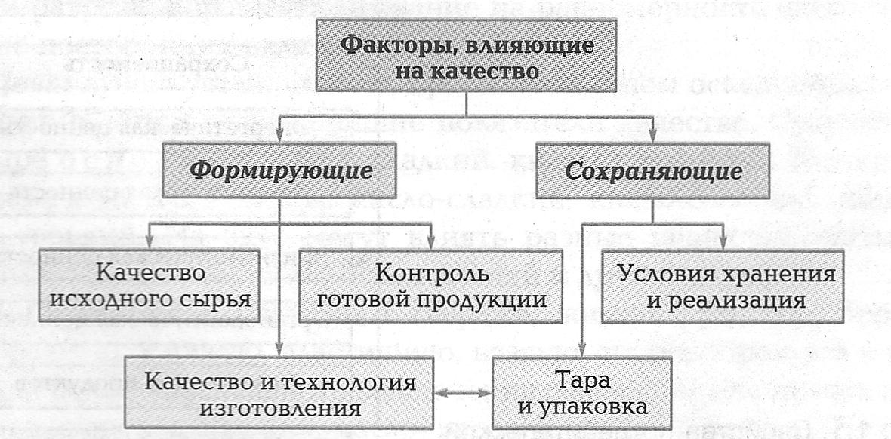

Глава 1
основы товароведения продовольственных товаров
1.1. оценка качества продовольственных товаров
Качество пищевых продуктов — это совокупность свойств продукции, обусловливающих ее пригодность для удовлетворения определенных потребностей в соответствии с назначением.
Качество пищевых продуктов определяют органолептическим и измерительным (инструментальный) методами.
Органолептическим методом определяют качество продуктов с помощью органов чувств: зрения, осязания, обоняния, слуха. Таким методом устанавливают цвет, вкус, запах, консистенцию, внешний вид продукта.
Внешний вид определяют путем осматривания его поверхности и разреза, обращают внимание на равномерность цвета и наличие посторонних включений.
Цвет лучше устанавливать при естественном освещении.
Вкус и запах — важнейшие показатели качества. Существует четыре основных вкуса: сладкий, кислый, соленый, горький, а также сложные вкусы: кисло-сладкий, кисло-соленый, сладковато-горький. На вкус могут влиять разные вещества, вызывая острый, жгучий, терпкий, освежающий и другие вкусы.
Консистенцию различают твердые, жидкую, рыхлую, порошкообразную, упругую, эластичную, вязкую, сиропообразную и т. д.
Для более объективного заключения о качестве некоторых продуктов (сыров, сливочное масло) введена балльная оценка. По сумме баллов определяется товарный сорт продукта.
Измерительный (инструментальный, или лабораторный) метод позволяет с помощью приборов, реактивов определить следующие свойства продукта:
- физические (удельная масса, плотность продуктов, температура их плавления, вязкость);
- химические (массовая доля влаги, белков, жиров, углеводов, органических кислот, минеральных веществ, вредных и ядовитых примесей);
- микробиологические (наличие болезнетворных и портящих пищевые продукты микробов);
- физиологические (энергетическая ценность; усвояемость; пищевая безвредность; витаминная ценность).
Качество товаров инструментальным методом определяется по средней пробе.
Средняя проба — образец, по которому можно судить о качестве всей партии товара. При отборе средней пробы берут небольшое количество товара из разных мест.
Показатели качества — это характерные для пищевого продукта свойства (рис. 1.1). Это количественная характеристика свойств товара.
Различают следующие показатели качества:
- единичные (например, размер для овощей и фруктов);
- комплексные (внешний вид).
| Свойства продукции | |
|---|---|
| Сохраняемость | Cвойство товара сохранять потребительские качества в течение определенного времени. |
| Энергетическая ценность | Определяется энергией, которую получает организм в процессе обмена веществ за счет белков, жиров и углеводов. Ценность пищи измеряется калорийностью. |
| Биологическая ценность | Характеризуется наличием в продуктах биологически активных веществ: незаменимых аминокислот, витаминов, микро- и макроэлементов, незаменимых полиненасыщенных кислот. |
| Физиологическая ценность | Обусловлена веществами, активно влияющими на организм человека (кофеин чая и кофе; теобромин шоколада и какао-порошка). |
| Органолептическая ценность | Это комплексное сочетание свойств продуктов (внешний вид, консистенция, вкус, запах). |
| Усвояемость продуктов | Зависит от совокупности свойств: содержания пищевых веществ, вкусовых качеств, состава и активности ферментов. |
| Доброкачественность | Сочетает в себе органолептическую ценность (вкус, цвет, запах и др.) и безопасность. |
Безопасность — это отсутствие вредных факторов, влияющих на здоровье человека.
Кулинарно-технологические свойства свойственны для некоторых видов продуктов (сухарные, бараночные изделия, овсяные хлопья — развариваемость, набухаемость).
На качество пищевых продуктов влияют:
- вид и качество сырья;
- способы и условия производства;
- упаковка и состояние тары;
- транспортирование и хранение.
Качество продукции определяется показателями.
Показатели также могут быть определяющими и специфическими. Например, внешний вид, размер, вкус — определяющий показатель, а степень зрелости, длина кочерыги — специфический показатель.
На качество продовольственных товаров влияют различные факторы (рис. 1.2).
рис. 1.2

▲ НАВЕРХ ▲
► К следующему подразделу 1.1.1